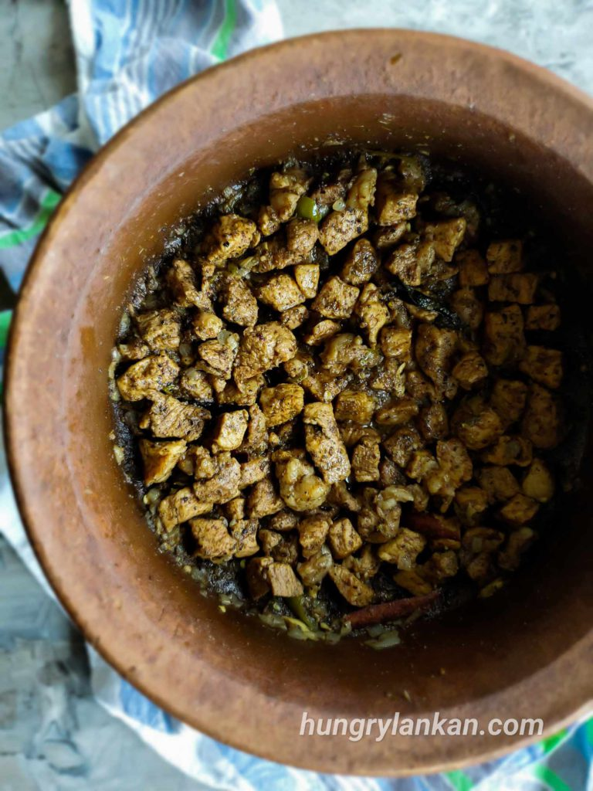

Pork Curry

Home Made Sri Lankan Chicken Curry
How I make pork curry as a Sri Lankan College student living in Japan
Ingredients
- Pork
- Onions
- Tumeric powder
- Curry powder
- Chilli powder
- Pepper
- Salt
- Water
- oil
Steps
- Heat up oil and add onions untill slightly brown.
- add pepper ( to your preffered amount ) and chilli powder ( to your preffered amount ).
- add one tea spoon of curry podwer and half a tea spoon of tumeric podwer.
- Put in the Pork and mix well and keep it for 3-4 minutes.
- add salt and mix well.
- add water and let it simmer till fully cooked.